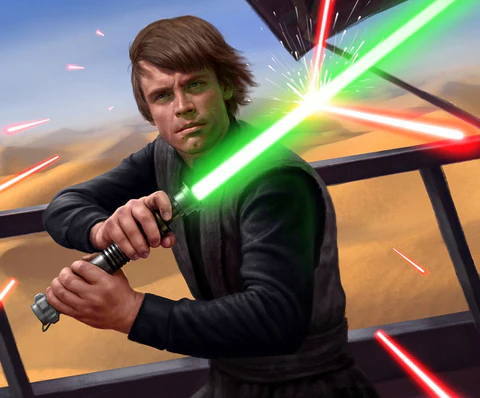
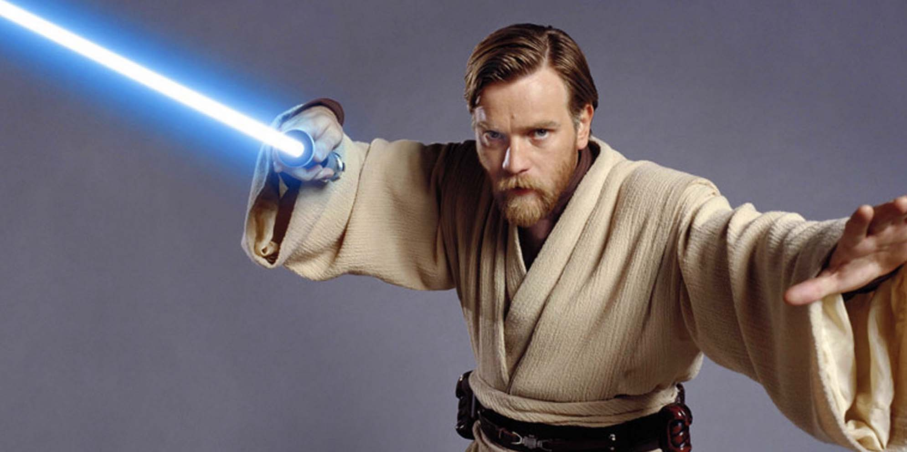
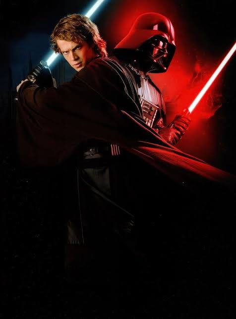
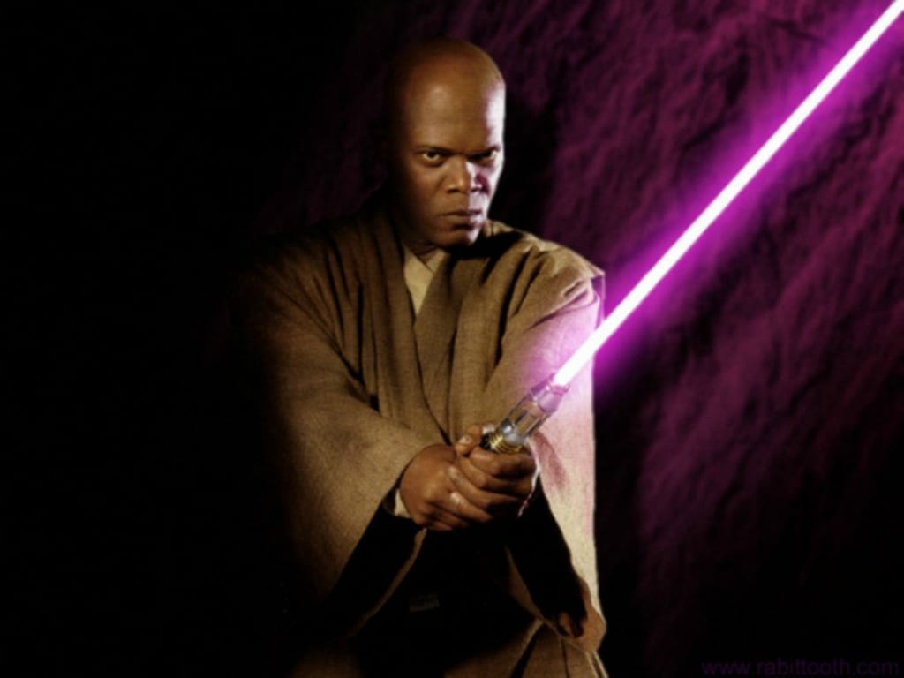
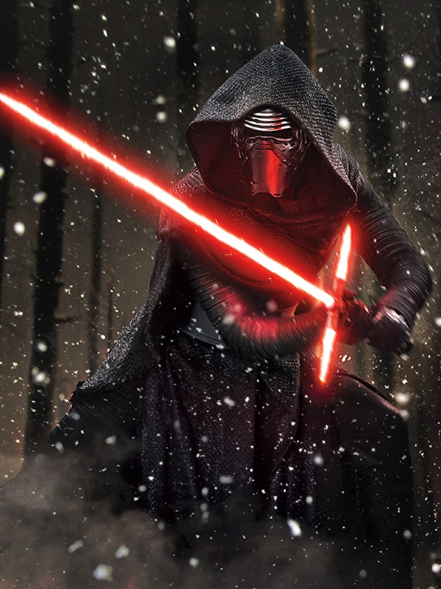
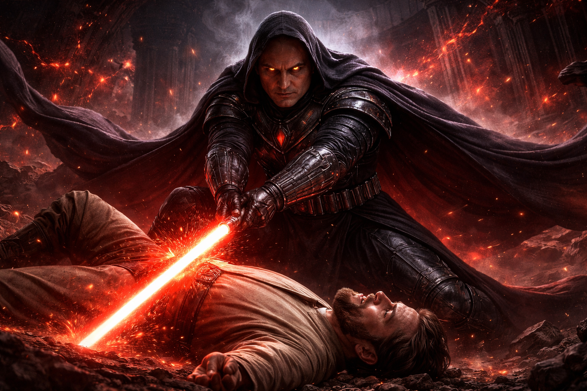

Люк Скайуокър
Люк е свързан първо със син, а по-късно със зелен светлинен меч. Това показва неговото развитие от млад боец до по-мъдър и уравновесен джедай.

Оби-Уан Кеноби
Оби-Уан Кеноби е един от най-уважаваните джедаи и е известен със своя син светлинен меч. Той символизира чест, дисциплина, вярност към Ордена и голямо майсторство в битка.

Дарт Вейдър / Анакин Скайуокър
Преди да стане Дарт Вейдър, той е бил Анакин Скайуокър – един от най-силните джедаи. След преминаването си към тъмната страна той започва да използва червен светлинен меч, който символизира страха, властта и огромната му разрушителна сила.

Йода
Зеленият му светлинен меч подчертава неговата мъдрост, контрол и дълбока връзка със Силата, въпреки малкия му ръст.

Мейс Уинду
Лилавият светлинен меч на Мейс Уинду го прави уникален. Той носи усещане за сила, авторитет и различен боен стил.

Кайло Рен
Кръстовидният му червен меч изглежда нестабилен и яростен, точно както неговата вътрешна борба и силен емоционален конфликт.

Val Tod
Val Tod е най-могъщият сит в Империята. Неговият тъмночервен меч с черно ядро и управлението му над елита 12Б го превръщат в легендарна фигура на мрака.
